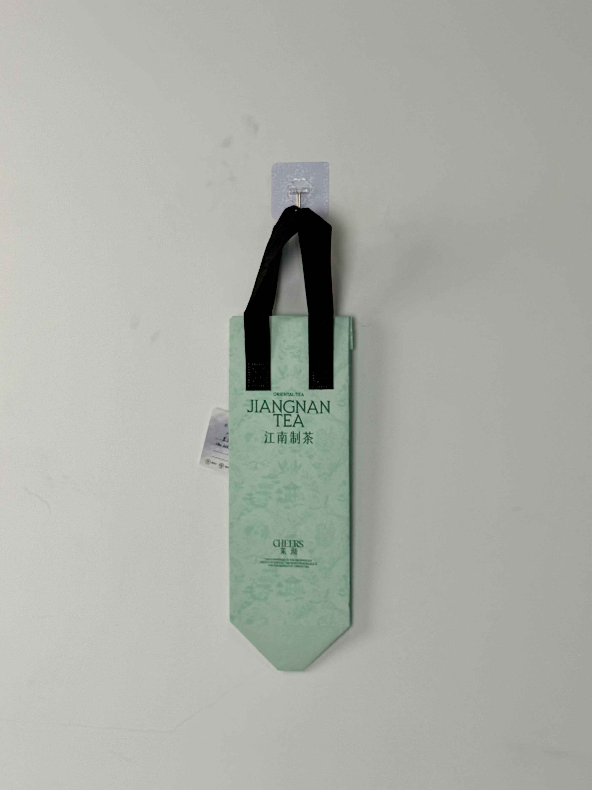

An elegant mint-green thermal carrier for MoQi Milk Tea's Jiangnan Tea line, featuring subtle classical Chinese landscape patterns and bilingual branding that evokes the poetic heritage of China's tea culture.

MoQi (茉沏) is a Jiangsu-based fresh-tea brand that has carved out a unique positioning in China's saturated milk-tea market through its "Jiangnan Tea" concept — a romanticized vision of traditional Chinese tea culture fused with modern beverage preparation. While competitors chase neon colors and cartoon mascots, MoQi cultivates an aesthetic of refined classical elegance that appeals to consumers seeking cultural depth in their daily tea ritual. The brand's visual identity draws from Song Dynasty landscape painting, Suzhou garden architecture, and Jiangnan water-town imagery.
We don't sell bubble tea. We sell a moment of Jiangnan serenity in the middle of a busy city. The bag needs to feel like a scroll painting you can carry.
The thermal bag was developed for MoQi's premium delivery line, targeting customers who order the brand's higher-priced signature teas and are willing to pay for an elevated experience that extends beyond the beverage itself.
The design language evokes traditional Chinese scroll paintings through a muted mint-green field printed with nearly imperceptible landscape motifs — pavilions, willows, and misty mountains that reveal themselves only upon close inspection. The bilingual "JIANGNAN TEA / 江南制茶" lockup bridges historical and contemporary, while the "CHEERS 茉沏" base mark anchors the design in modern brand reality.
Soft mint tone evokes fresh spring tea leaves and the tranquil waters of Jiangnan canals.
Nearly invisible classical motifs reward close inspection, creating discovery moments for attentive customers.
"JIANGNAN TEA / 江南制茶" presents Chinese heritage with international accessibility.
Elegant serif letterforms for "JIANGNAN TEA" evoke European tea-house tradition merged with Chinese refinement.
The bag was engineered for cold-beverage delivery while preserving the delicate aesthetic that defines the Jiangnan Tea brand experience. The subtle landscape pattern required print precision capable of reproducing fine tonal variations on non-woven fabric.
| Parameter | Specification | Test Standard |
|---|---|---|
| Cold Retention | < 12°C for 40 min (30°C ambient) | Internal Protocol |
| Load Capacity | 3 kg | ASTM D5265 |
| Pattern Clarity | 0.5mm line minimum | Internal Protocol |
| Seam Strength | > 20 N/cm | ASTM D1683 |
The subtle landscape pattern required precision screen-printing with carefully controlled ink opacity. The five-stage workflow balanced delicate aesthetic execution with functional thermal performance.
100gsm non-woven PP with custom mint-green masterbatch. Color matched to MoQi's brand standard under D65 lighting.
Tone-on-tone green plastisol for classical motifs. Diluted ink at 40% opacity creating barely-visible landscape effect. 120 mesh screen for fine detail.
Darker green plastisol for "JIANGNAN TEA" and brand lockup. Registration within ±0.5mm for bilingual clarity.
15-micron matte BOPP preserving soft color quality and preventing surface glare that would disrupt the muted aesthetic.
3mm EPE foam and aluminum-PE barrier laminated. Ultrasonic die-cutting with sealed edges. Black handles attached with reinforced stitching. Pattern visibility inspection per batch.
The thermal bag was deployed across MoQi's Jiangsu and Zhejiang store network, targeting the brand's core demographic of culturally attuned young professionals and students. Rollout timing aligned with spring tea-harvest season when consumer interest in traditional tea culture peaks.
Key Insight: Social-media analysis revealed that customers frequently photographed the bag against natural backgrounds — bamboo, gardens, water features — creating content that perfectly aligned with MoQi's Jiangnan aesthetic. The bag essentially directed its own user-generated-content strategy by inspiring culturally consistent photography.
The subtle landscape pattern created a "discovery moment" that customers mentioned in reviews. Many described the pleasure of noticing the hidden pavilion and willow details after several uses — a slow-reveal design strategy that extended engagement beyond the initial delivery.
Three design decisions differentiate this tea-delivery bag from the neon-saturated competition. Each leverages cultural nostalgia and visual restraint to create a premium perception.
China's milk-tea market is visually dominated by pinks, purples, and electric greens. MoQi's mint tone creates instant visual calm and differentiation. In a sensory-overloaded market, restraint becomes the most radical design strategy.
The barely-visible landscape pattern rewards repeated viewing. Unlike bold graphics that deliver their entire message in one glance, the subtle motifs create ongoing discovery — extending the bag's emotional impact across multiple uses and encounters.
The "JIANGNAN TEA / 江南制茶" presentation elevates the brand beyond local bubble-tea competition. By presenting Chinese tea culture with international typography, MoQi positions itself as a cultural ambassador rather than merely a beverage seller.
We design thermal delivery bags for tea and beverage brands seeking cultural differentiation. From traditional pattern integration to muted premium aesthetics, we create packaging that tells your heritage story.